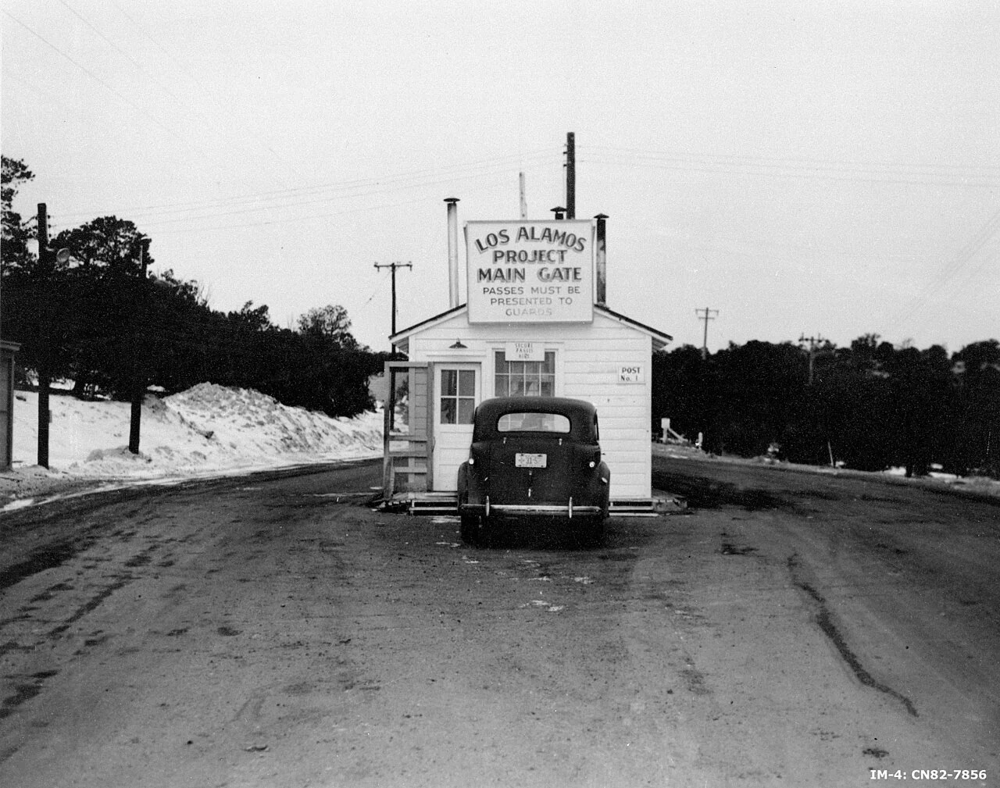
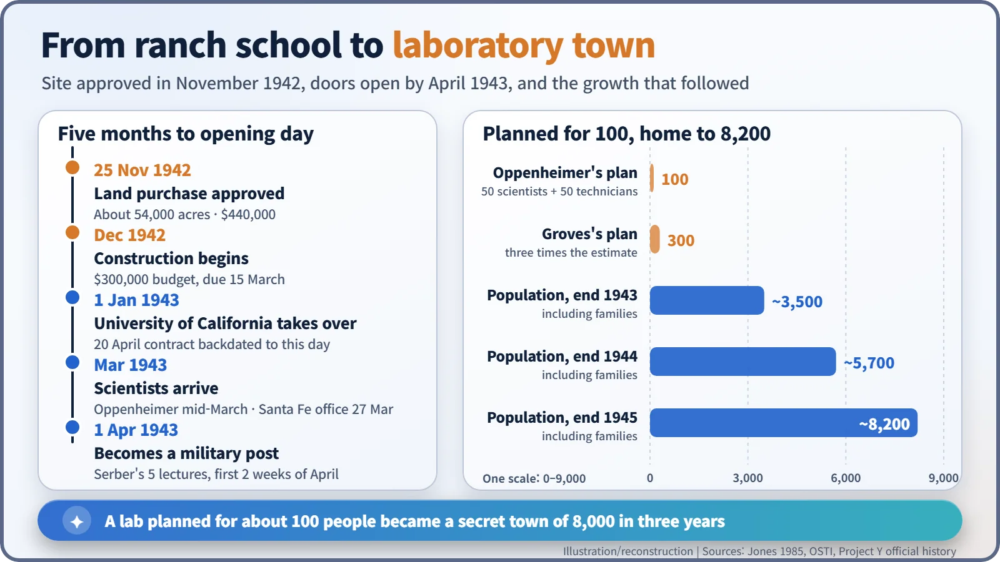
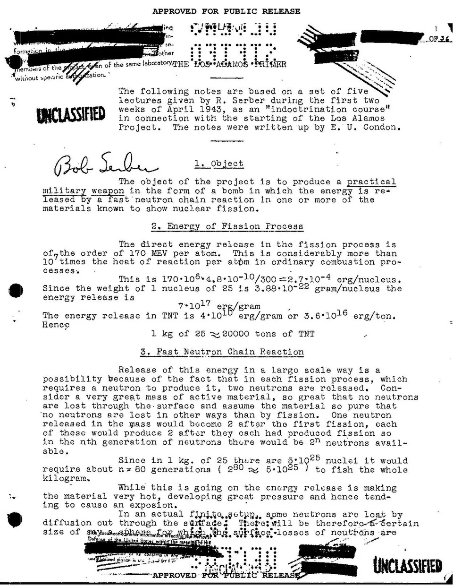
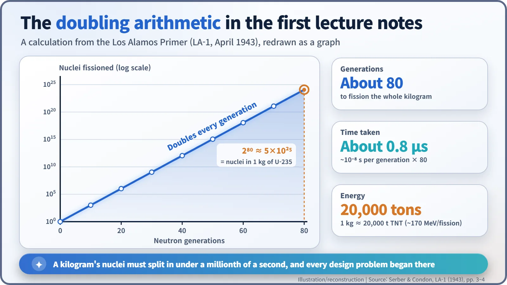

Nuclear History · 101
Born at "P.O. Box 1663" — The Secret City That Became Los Alamos Laboratory (1943)
Planned for about 100 people, it opened in spring 1943 with three possible birthdays and grew into a town of 8,200 whose only address was a post office box.
In the spring of 1943 a boys' ranch school on a New Mexico mesa turned into Los Alamos, the secret laboratory that designed the atomic bomb. It had three possible birthdays, a civilian staff behind a military fence, and a first lecture course whose notes became report LA-1. Planned for about 100 people, it was home to some 8,200 by the end of 1945, all sharing one address: P.O. Box 1663, Santa Fe.
Born at a mailbox
Some American birth certificates from the Second World War give a strange place of birth: not a town, but a mailbox. "P.O. Box 1663, Santa Fe, New Mexico." The babies were born on a remote mesa where thousands of people lived, yet the community's only official address was one small box at the Santa Fe post office. Behind that box was the secret laboratory that designed the atomic bomb: Los Alamos. [6]

A building site lands on a boys' ranch school
In November 1942, J. Robert Oppenheimer (1904–1967) and General Leslie R. Groves (1896–1970) settled on a boys' boarding school on the Pajarito Plateau as the home of the new bomb laboratory. On 25 November the Under Secretary of War approved buying about 54,000 acres for $440,000. [6]
Construction began in December. Groves first set aside $300,000 and wanted the job finished by 15 March 1943. By the end of November 1943 more than $7 million had been spent. Not everyone left the mesa willingly: some Hispanic homesteaders had their land condemned under wartime powers, for as little as $7 an acre. [6]
A lab for 100, and no uniforms, please
Oppenheimer's first idea of the staff was about 50 scientists and 50 technicians. Groves tripled it to 300. Before the last schoolboys had even left, construction workers alone had pushed the population to about 1,500. The laboratory's own history describes the place as "an Army post that looked more like a frontier mining camp", served at the start of 1943 by a single telephone line. [3]
The laboratory's status was also in dispute. The original plan was a military laboratory, with scientists commissioned as Army officers. Robert Bacher and I. I. Rabi objected. In late February 1943, at Oppenheimer's request, James B. Conant and Groves put in writing that the work had presidential authority and the highest national importance, and that the laboratory would stay civilian at least through 1943. Militarization was expected for the final stages, but, in the words of the US Department of Energy's history, "in fact, militarization never took place." The Army ran the fence and the security; the scientists ran the science. Bacher joined on condition that he would resign if the lab were militarized, while Rabi never moved to the mesa but became a valued consultant. [1]
So when was its birthday?
There is no single founding date. It depends on what you count:
- 1 January 1943: the University of California took on the operation of the laboratory. The formal contract was signed on 20 April and backdated to this day.
- March 1943: after three months of recruiting across the country, Oppenheimer arrived on the mesa in mid-March. On 27 March an office opened at 109 East Palace Avenue in Santa Fe.
- 1 April 1943: Los Alamos officially became a military post.
Dorothy McKibbin ran that Santa Fe office, issuing temporary passes and arranging rides up the hill. She remembered the new arrivals as "breathless, sleepless, haggard and tired". Borrowed equipment, including two Van de Graaff generators and a cyclotron, came up from the railway station by truck along a single rough road. [1] [3] [6]

The first lecture, over the sound of hammers
In the first two weeks of April 1943, the theorist Robert Serber (1909–1997) gave five lectures, described as an "indoctrination course", so that every newcomer started from the same page on bomb physics. Edward U. Condon wrote up the notes, which became the laboratory's first technical report, LA-1, known as the Los Alamos Primer. It opens: [2]
"The object of the project is to produce a practical military weapon in the form of a bomb in which the energy is released by a fast neutron chain reaction in one or more of the materials known to show nuclear fission."

The arithmetic in the notes is simple. If each fission releases two neutrons and each triggers another fission, the count doubles every generation: 1, 2, 4, 8… A kilogram of uranium-235 holds about 5×1025 nuclei, which is roughly 2 multiplied by itself 80 times. A fast-neutron generation lasts about a hundred-millionth of a second (10−8 s), so 80 generations take under a millionth of a second. The Primer put the energy of one fully fissioned kilogram at about 20,000 tons of TNT. The catch was that heat makes the material expand and fly apart, which stops the reaction. How fast and how tightly the material could be assembled became the laboratory's central problem. [2]

The lecture room was still a building site. According to Serber's later recollection, when he used the word "bomb", Oppenheimer sent John Manley to stop him because there were too many workmen around, and words such as "gadget" took its place. The story rests on Serber's memory alone.
A town where numbers replaced names
Security reached into daily life. Driver's licences and bank accounts were issued under numbers rather than names; outgoing mail was censored and long-distance calls were monitored. Enrico Fermi became "Henry Farmer", and the word "physicist" was off limits, so everyone was an "engineer". Six log-and-stone houses left from the school were the only homes with bathtubs, so the street became known as "Bathtub Row"; Oppenheimer lived there. [3] [6]
The laboratory started out with divisions for theory (under Hans Bethe), experimental physics (Bacher), chemistry and metallurgy (Joseph Kennedy) and ordnance (Deak Parsons). Including families, the population grew to about 3,500 by the end of 1943, about 5,700 by the end of 1944 and about 8,200 by the end of 1945. [6]
Oppenheimer stepped down on 16 October 1945, and the next day Norris Bradbury took over, at first on a six-month trial; he stayed about 25 years. The atomic bomb was not the inspiration of one genius. It was the work of a whole town whose address was a mailbox. [5]